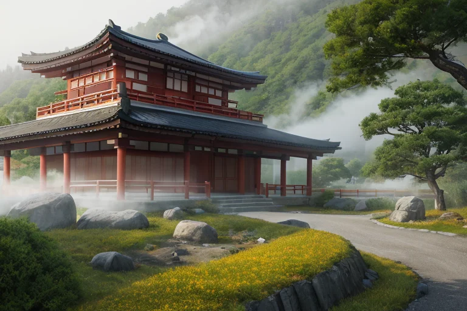

第一章 現実の群馬
あなたはまだ気づいていない。この土地にも、王がいることを。
榛名山の裾野、静かな神社の境内。空気は澄み、遠くに伊香保温泉の湯煙が微かに揺らめいている。訪れる人は少なく、深い静寂が支配する。ここには、現実の群馬がある。からっ風が山肌を撫で、木々の葉をかすかに震わせる音だけが、時の流れを告げる。水沢うどんの店先で湯気が立ち上り、富岡製糸場の赤レンガは、かつてこの地を動かした近代化の風を、無言で記憶している。
歪みは、ここにも確かに存在する。地の底ではプレートが軋み、熱が蓄えられる。しかし、大きな災害は起こらない。揺れはいつも、ほんの少しだけ和らぎ、温泉地の噴気は不思議と安定している。人々はそれを、土地の気質や偶然だと思っている。上州の気風がもたらす、ただの幸運だと。
彼らは知らない。この静寂そのものが、微調整の結果であることを。風向きの一寸の変化、湯煙の一瞬の乱れ。すべては、目に見えない「調整」の痕跡なのだ。
第二章 歪みの兆候
榛名山の静かな湖畔で、グンマリア・ヴェントは目を閉じていた。彼女の感覚は、尾瀬の湿原を渡る微風にも、富岡製糸場のレンガの隙間を抜ける空気の流れにも広がっている。地の底では、プレートの歪みが蓄積され、熱が膨張しようとしていた。通常なら、彼女は自由奔放に気流を操り、その圧力を分散させる。
しかし今、彼女の内側に、小さな淀みが生じていた。風は、ただの物理現象ではなくなっていた。人々の祈り——だるまに願いを込める指先、湯船で疲れを癒す吐息、からっ風の中を歩く商人の息づかい——それらが、感情として風に乗り、彼女に流れ込んでくる。それは温かく、重かった。
「王よ、集中を」ヴェントラが囁く。風の妖精は、王の心の乱れを、気流の僅かな滞りとして感知していた。
「わかっている」グンマリアは答えた。だが、問いが頭を離れない。人々を動かす願いや切実さ。それに比べて、自分を動かす風は何なのか。星からの指令か、それとも、この地が彼女に植え付けつつある、この重く温かい何かなのか。その答えのない問いが、彼女の調整に、ほんの一瞬の躊躇を生んだ。
第三章 王の葛藤
草津温泉の湯畑から立ち上る湯煙は、夜の闇に溶け、やがて見えなくなる。グンマリアは榛名山の中腹、人気のない展望台に立っていた。眼下に広がる町の灯りは、歪みの列島を支える無数の命の証だった。
彼女を動かす風は何か。
星からの指令は、明確な論理だった。歪みを調整せよ。災いを最小化せよ。しかし、指令には「なぜ」がなかった。なぜ守るのか。なぜこの地なのか。富岡製糸場のレンガに触れた時、そこに込められた人々の「明日への意志」が、彼女の無感情な核を揺さぶった。上州のからっ風のように、荒々しく、そしてどこまでも真っ直ぐなその意志が。
「王よ」ヴェントラの声が、実際の風のように耳元を過ぎた。「指令だけが風ではない。この地が吹かせる風もある」
彼女は目を閉じた。指令という確かな風。そして、この地の願いという、形のない、しかし確かに存在するもう一つの風。二つの風は時に同調し、時に反発する。その狭間で、彼女という存在は、ただ翻弄される一片の落ち葉のようだった。答えは出ない。ただ、風は吹き続ける。
第四章 妖精との対話
「あなたを動かす風は、何ですか？」
ヴェントラの問いは、湯煙の向こうから、静かに届いた。彼女は、王が座る岩の傍らに、そっと腰を下ろした。その目には、いつもの奔放さはなく、深い泉のような静けさがあった。
「指令です」王は即座に答えた。しかし、その声には、かすかな揺らぎがあった。ヴェントラは、そっと首を振った。
「指令は、向かい風に過ぎません。本当にあなたを前に進ませる風は、もっと内側から湧くもの。祈りのようなものです」
「祈り？」王は、感情という未知の気流を感じた。
「ええ。ここでは、湯に祈り、風に祈り、繭に祈る。それは願いではなく、魂の重りを下ろす行為。祈ることで、人は、ただそこに『在る』ことを許される。王よ、あなたもまた、『在る』だけでいい」
尾瀬の湿原を渡る風が、二人の間を静かに流れた。指令という強風の中、ただ「在る」という、微かな、しかし確かな風。王は、初めて、その気配を感じ取ろうとした。
第五章「微調整と余韻」
富岡製糸場のレンガ壁に、夕陽が長い影を落とす。かつて器械の音で満ちていた空間は、今は静寂に包まれている。ヴェントラは窓辺に立ち、町を流れる目に見えない気流を感じ取っていた。人々の焦り、不安、些細な喜び。それらはすべて微かな精神の波となり、土地の歪みに共振する。彼女の役目は、その共振が増幅しすぎないよう、そっと手を添えることだ。
グンマリア・ヴェントは、榛名山の中腹に佇んでいた。足元からは、地熱のゆるやかな鼓動が伝わる。彼はもう、指令に従って風を操るだけの存在ではなかった。尾瀬で感じた「祈り」の風。それは願望ではなく、受容の気流だった。今、彼はその気流を、この土地の精神波の微調整に用いている。大きな災いは消せない。だが、集団心理の暴走を一呼吸遅らせ、悲しみの密度をほんの少し薄める。湯煙のように、そっと立ち昇らせる。
からっ風が丘を渡り、焼きまんじゅうの甘い香りを運んでいく。日常は、目に見えない調整の上に、かろうじて成り立っている。王は、自らの中に芽生えた「在りたい」という風に、静かに身を任せた。
あなたの町にも、王がいる。